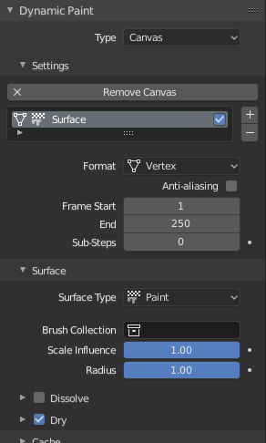
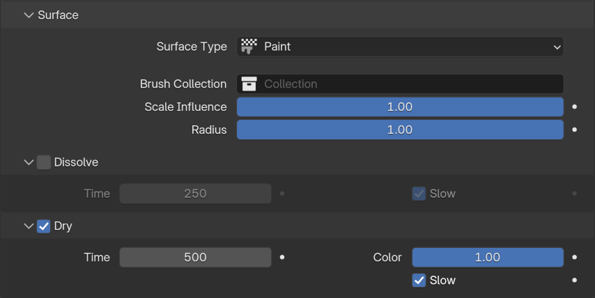
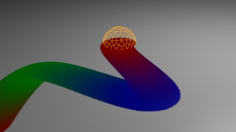
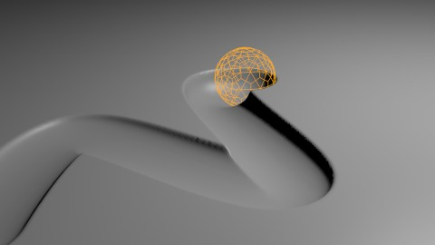
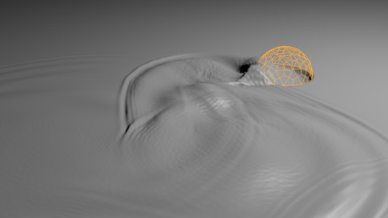
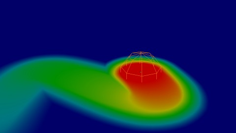
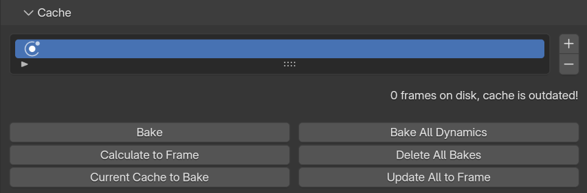
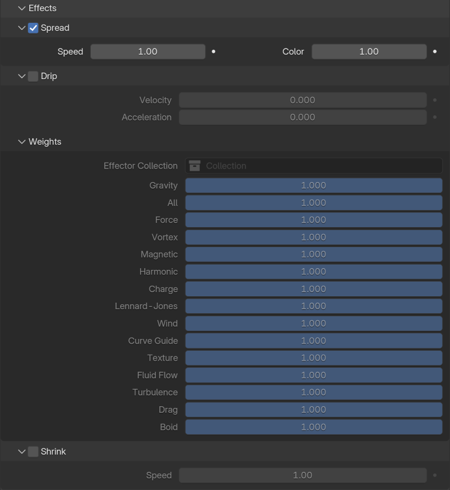
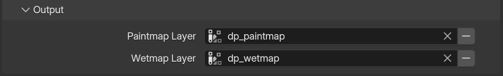

Canvas¶
Tham khảo
- Panel:
- Type:
Canvas
Kiểu Canvas khiến object nhận sơn từ các brush Dynamic Paint.
Settings¶

Panel chính của Canvas.¶
- Paint Surface
Một danh sách các surface của Dynamic Paint. Về cơ bản, các surface này là những lớp sơn hoạt động độc lập với nhau. Bạn có thể xác định cài đặt riêng cho từng lớp và bake chúng riêng biệt.
- Is Active
Hộp kiểm này bật/tắt việc surface có hoạt động hay không. Nếu không được chọn thì sẽ không có phép tính nào được thực hiện.
Ở phía dưới, bạn có thể đặt loại surface và điều chỉnh các cài đặt chất lượng cùng thời gian.
- Format
Mỗi surface có một định dạng và loại nhất định. Định dạng quyết định cách dữ liệu được lưu trữ và xuất ra.
- Vertex:
Dynamic Paint hoạt động trực tiếp trên dữ liệu vertex của mesh. Kết quả được lưu bằng point cache và có thể được hiển thị trong viewport. Tuy nhiên, việc dùng cấp độ vertex cũng đòi hỏi một mesh được subdiv đậm để hoạt động.
- Image Sequences:
Dynamic Paint tạo các file image được UV wrap với độ phân giải xác định làm đầu ra.
- Resolution
Bạn có thể điều chỉnh kích thước image đầu ra cho loại surface Image Sequences. Ví dụ, dùng 256 sẽ cho image đầu ra 256×256. Tăng gấp đôi độ phân giải có thể làm tăng gấp bốn lần thời gian bake và ngược lại.
- Anti-Aliasing
Anti-Aliasing để làm mượt mép sơn bằng phương pháp multisampling 5×.
- Frame Start, End
Xác định frame bắt đầu và kết thúc việc xử lý surface.
- Sub-Steps
Các mẫu bổ sung giữa các frame. Chúng thường cần thiết khi có brush di chuyển rất nhanh.
Surface¶
Tham khảo
- Type:
Canvas
- Panel:

Panel nâng cao của Canvas.¶
Từ panel Surface, bạn có thể điều chỉnh loại surface và các cài đặt liên quan.
Surface Type¶
Mỗi surface có một "loại" xác định surface được dùng để làm gì.
Paint¶


Surface Paint.¶
Paint là loại surface cơ bản xuất ra các giá trị màu và độ ướt. Đối với surface dạng vertex, kết quả được xuất ra dưới dạng Color Attributes.
Wetmap là đầu ra trắng-đen thể hiện độ ướt của sơn. Trắng là ướt tối đa, đen là khô hoàn toàn. Nó thường được dùng làm mask cho việc render. Một số "hiệu ứng sơn" chỉ ảnh hưởng đến sơn ướt.
- Dry
Việc tắt hoàn toàn sự khô đi có ích cho việc sơn lan truyền không giới hạn.
- Color Dry
Có thể được dùng để xác định mức độ ướt mà tại đó màu sơn bắt đầu chuyển về "nền" của surface. Giá trị thấp hơn có thể hữu ích để ngăn sơn đang lan trở nên trong suốt khi khô, trong khi giá trị cao hơn nhìn chung cho kết quả tốt hơn.
Displace¶


Surface Displace.¶
Loại surface này xuất ra độ sâu giao nhau từ các object brush.
- Incremental
Displace mới được cộng dồn lên trên displace hiện có.
- Max Displace
Mức tối đa của độ sâu giao nhau; các giá trị lớn hơn sẽ bị kẹp về giá trị này.
- Displace Factor
Hệ số nhân cho độ sâu giao nhau. Bạn có thể dùng nó để điều chỉnh cường độ displace cuối cùng hoặc dùng giá trị âm để sơn các chỗ gồ lên.
Mẹo
Nếu đầu ra displace trông quá gồ ghề, việc thêm một modifier Smooth sau Dynamic Paint trong ngăn xếp modifier thường sẽ giúp ích.
Waves¶


Surface Waves.¶
Loại surface này tạo ra chuyển động sóng được mô phỏng. Giống như displace, surface sóng cũng dùng độ sâu giao nhau của brush để xác định cường độ brush.
- Open Borders
Cho phép sóng đi xuyên qua "cạnh" của mesh thay vì phản xạ lại từ chúng.
- Timescale
Điều chỉnh trực tiếp tốc độ mô phỏng mà không ảnh hưởng đến kết quả mô phỏng. Giá trị thấp hơn làm mô phỏng chạy chậm hơn và ngược lại.
- Speed
Ảnh hưởng đến tốc độ sóng truyền trên surface. Cài đặt này cũng tương ứng với kích thước của mô phỏng. Tốc độ giảm một nửa tương đương với surface lớn gấp đôi.
- Damping
Giảm cường độ sóng theo thời gian. Về cơ bản là điều chỉnh sóng biến mất nhanh như thế nào.
- Spring
Điều chỉnh lực kéo nước trở về "mức không".
- Smoothness
Giới hạn độ dốc tối đa của sườn sóng giữa các điểm mô phỏng. Điều này giúp loại bỏ đáng kể "nhiễu" xảy ra khi dùng các object có cạnh sắc (như cube) làm brush. Giá trị mặc định chỉ đủ để loại bỏ các đỉnh nhọn sắc nhất; để có sóng mượt hơn nữa, hãy dùng giá trị cao hơn với cái giá là chi tiết bị giảm.
Mẹo
Trong một số trường hợp, chuyển động sóng trở nên rất không ổn định xung quanh brush. Việc giảm tốc độ sóng, "hệ số sóng" của brush hoặc thậm chí độ phân giải của mesh/surface thường sẽ giúp ích.
Weight¶


Surface Weight.¶
Đây là loại surface đặc biệt chỉ khả dụng cho định dạng vertex. Nó xuất ra các vertex weight group có thể được dùng bởi các modifier và công cụ khác của Blender.
Mẹo
Thường được ưu tiên là dùng brush dựa trên "proximity" cho các surface weight để có sự suy giảm mượt mà giữa các giá trị trọng số.
Common Options¶
Với mỗi loại surface có những cài đặt đặc biệt riêng để điều chỉnh. Phần lớn các loại có các cài đặt Dissolve và Brush:
- Dissolve
Được dùng để surface trở về trạng thái ban đầu một cách mượt mà trong một khoảng Time xác định.
- Brush Collection
Được dùng để xác định một collection cụ thể để lấy các object brush từ đó.
- Influence Scale, Radius Scale
Để tinh chỉnh cài đặt brush riêng cho từng surface.
Cache¶
Tham khảo
- Type:
Canvas
- Panel:

Panel cache của Canvas.¶
Panel này hiện chỉ hiển thị cho các surface định dạng Vertex. Bạn có thể dùng nó để điều chỉnh và bake point cache.
Effects¶
Tham khảo
- Type:
Canvas
- Panel:

Panel Effects.¶
Đây là tính năng đặc biệt dành cho surface loại "Paint". Nó tạo ra chuyển động có animation trên bề mặt canvas.
- Effects
- Spread
Sơn từ từ lan ra các điểm xung quanh, cuối cùng lấp đầy mọi vùng được nối với nhau.
- Drip
Sơn di chuyển theo hướng cụ thể được chỉ định bởi force field của Blender, trọng lực và vận tốc, với các mức ảnh hưởng do người dùng xác định.
- Shrink
Vùng đã sơn từ từ co lại cho đến khi biến mất hoàn toàn.
Đối với hiệu ứng lan và nhỏ giọt, chỉ "sơn ướt" mới bị ảnh hưởng, nên khi sơn khô dần, chuyển động sẽ chậm dần cho đến khi dừng hẳn.
Initial Color¶
Tham khảo
- Type:
Canvas
- Panel:
Cho phép bạn xác định màu ban đầu của canvas. (Todo 2.62)
None
Color
UV Texture
Vertex Color
Output¶
Tham khảo
- Type:
Canvas
- Panel:

Panel Output của Canvas.¶
Từ panel Output, bạn có thể điều chỉnh cách surface xuất kết quả của nó.
Vertex¶
Đối với các surface định dạng Vertex, bạn có thể chọn một lớp dữ liệu mesh (màu/trọng số tùy thuộc vào loại surface) để tạo kết quả vào đó. Bạn có thể dùng biểu tượng "+"/"-" để thêm/xóa các lớp dữ liệu với tên đã cho. Nếu không tìm thấy lớp với tên đã cho, nó sẽ được hiển thị màu đỏ.
Image Sequence¶
Đối với các surface Image Sequence, bạn có thể xác định UV map được dùng cùng thư mục lưu file đầu ra, tên file và định dạng image.